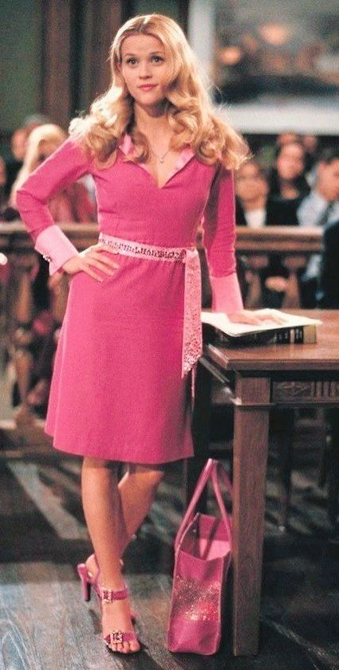
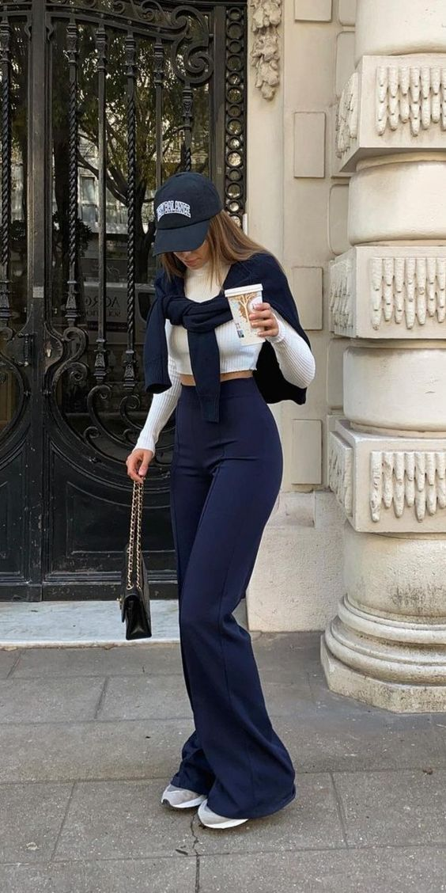
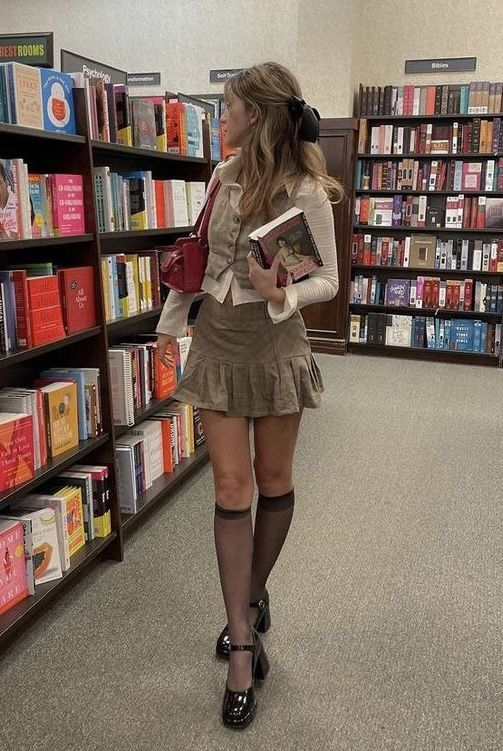
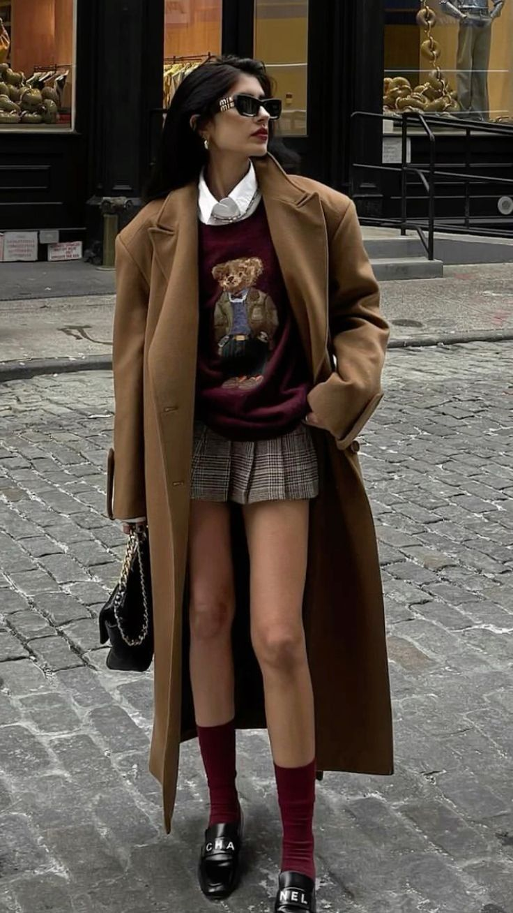
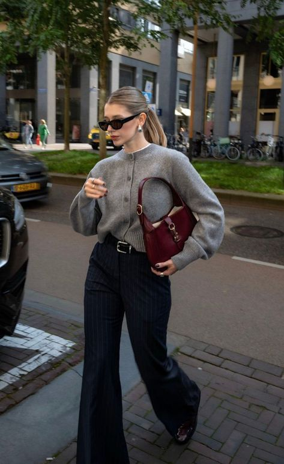
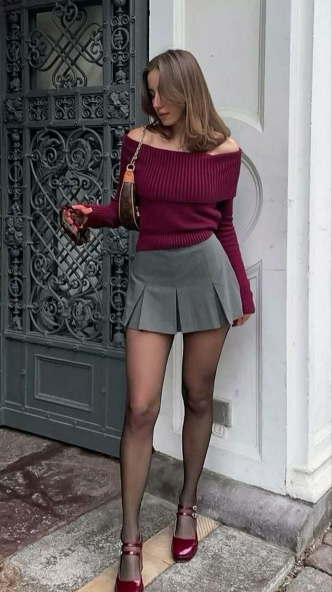

BARBIECORE
Pembe elbise ve topuklularla tam bir kampüs kraliçesi havası.
moda, özgüven ve kampüs enerjisinin buluştuğu diğital dergiye hoş geldin!
İSÜ FASHION; kombin fikirleri, trend avcılığı Ve stil ipuçlarıyla kampüs hayatını daha şık ve eğlenceli hale getirmeyi amaçlayan öğrenci odaklı bir moda platformudur.
Kampüs günün için hangi tarz sana daha yakın? Aşağıdaki kombinlerden birini seç, kendi "main character" stilini yarat! ❤️

Pembe elbise ve topuklularla tam bir kampüs kraliçesi havası.

Ders arası kahve molasında hem rahat hem şık görünmek isteyenlere.

Kütüphane günleri için romantik, yumuşak tonlarda akademik stil.

Uzun kaban, sweatshirt ve mini etekle şehir sokaklarında cool yürüyüşler.

Nötr tonlar ve şık çanta ile sade ama zarif kampüs stili.

Sıcacık kazak ve mini etekle hem rahat hem tatlı bir görünüm.
Pembe elbise ve topuklularla tam bir kampüs kraliçesi havası.
Ders arası kahve molasında hem rahat hem şık görünmek isteyenlere.
Kütüphane günleri için romantik, yumuşak tonlarda akademik stil.
Uzun kaban, sweatshirt ve mini etekle şehir sokaklarında cool yürüyüşler.
Nötr tonlar ve şık çanta ile sade ama zarif kampüs stili.
Sıcacık kazak ve mini etekle hem rahat hem tatlı bir görünüm.